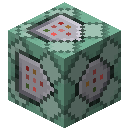

ゆうは作 Windowsアプリたち
Windowsで使えるアプリ。
Image to MinecraftSkin Tool
画像を簡単にMinecraftのスキンに変換することができるツールです!
画像を簡単にMinecraftのスキンに変換することができるツールです!

Manifest Creator v2
マイクラ統合版で使うmanifest.jsonを簡単に生成できるツールの第二弾！
マイクラ統合版で使うmanifest.jsonを簡単に生成できるツールの第二弾！